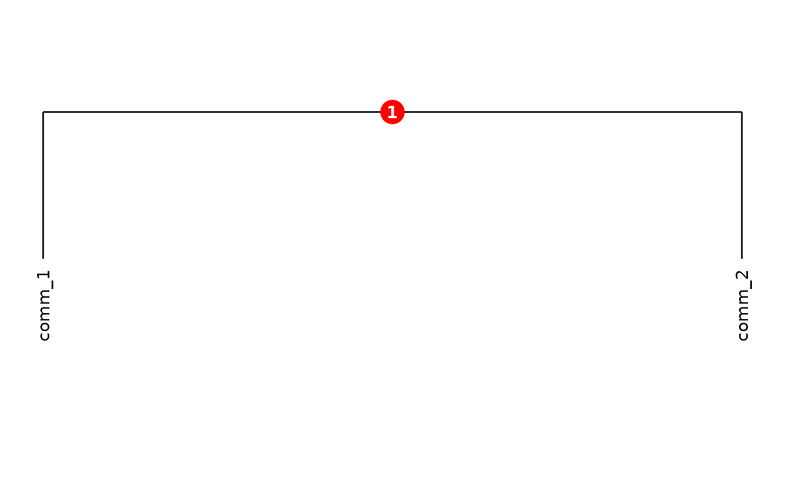
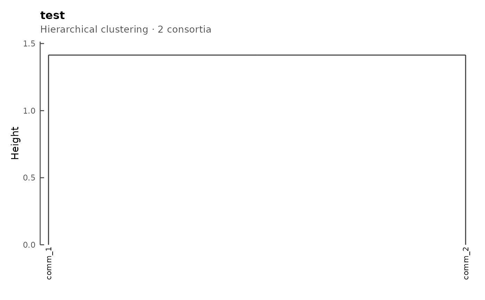

Plot a ConsortiumMetabolismSet object
Source:R/methods-plot.R
plot-ConsortiumMetabolismSet-ANY-method.RdRender the dendrogram of a ConsortiumMetabolismSet's
hierarchical clustering of consortia, optionally annotated with
the internal cluster identifiers used by
extractCluster.
Usage
# S4 method for class 'ConsortiumMetabolismSet,ANY'
plot(
x,
label_colours = NULL,
max_nodes = 20,
label_size = 3,
showClusterIds = TRUE
)Arguments
- x
A
ConsortiumMetabolismSetobject.- label_colours
Optional tibble with
labelandcolourcolumns mapping consortium names to custom tip colours.- max_nodes
Integer. Maximum number of internal cluster nodes to overlay with cluster-ID badges (only used when
showClusterIds = TRUE). Defaults to20.- label_size
Numeric tip-label size.
- showClusterIds
Logical. If
TRUE(default), draw the internal cluster identifiers used byextractClusteras small filled circles on top of the dendrogram. Set toFALSEfor a clean dendrogram suitable for figure export.
Details
The dendrogram is the one computed at CMS construction time from the FOS overlap matrix; tip labels are consortium names.
When showClusterIds = TRUE (the default), small numbered
circles overlay the internal nodes of the dendrogram (up to
max_nodes of them). The numbers are the cluster IDs that
extractCluster accepts to retrieve a sub-CMS for
the subtree rooted at that node.
For figure export, set showClusterIds = FALSE to obtain
a clean dendrogram without the cluster-ID overlays. Use
label_colours to recolour individual tip labels by
supplying a tibble with label and colour columns
(one row per consortium to recolour).
Examples
cm1 <- synCM("comm_1", n_species = 3, max_met = 5)
cm2 <- synCM("comm_2", n_species = 4, max_met = 6)
cms <- ConsortiumMetabolismSet(cm1, cm2, name = "test")
#>
#> ── Creating CMS "test" ─────────────────────────────────────────────────────────
#> ℹ Validating 2 <ConsortiumMetabolism> objects
#> ✔ Validating 2 <ConsortiumMetabolism> objects [11ms]
#>
#> ℹ Collecting metabolites from 2 consortia
#> ✔ Collecting metabolites from 2 consortia [30ms]
#>
#> ℹ Re-indexing 6 unique metabolites
#> ✔ Re-indexing 6 unique metabolites [27ms]
#>
#> ℹ Expanding 2 binary matrices to 6-dimensional space
#> ✔ Expanding 2 binary matrices to 6-dimensional space [24ms]
#>
#> ℹ Computing 6 x 6 levels matrix
#> ✔ Computing 6 x 6 levels matrix [25ms]
#>
#> ℹ Computing pairwise overlap (1 pairs via crossprod)
#> ✔ Computing pairwise overlap (1 pairs via crossprod) [23ms]
#>
#> ℹ Assembling pathway data from 2 consortia
#> ✔ Assembling pathway data from 2 consortia [31ms]
#>
#> ℹ Building dendrogram from 2 x 2 dissimilarity matrix
#> ✔ Building dendrogram from 2 x 2 dissimilarity matrix [22ms]
#>
#> ℹ Extracting dendrogram node positions
#> ✔ Extracting dendrogram node positions [24ms]
#>
#> ℹ Collecting 2 consortium graphs
#> CMS "test" created: 2 consortia, 6 metabolites (0.2s)
#> ✔ Collecting 2 consortium graphs [82ms]
#>
plot(cms)

plot(cms, showClusterIds = FALSE)
